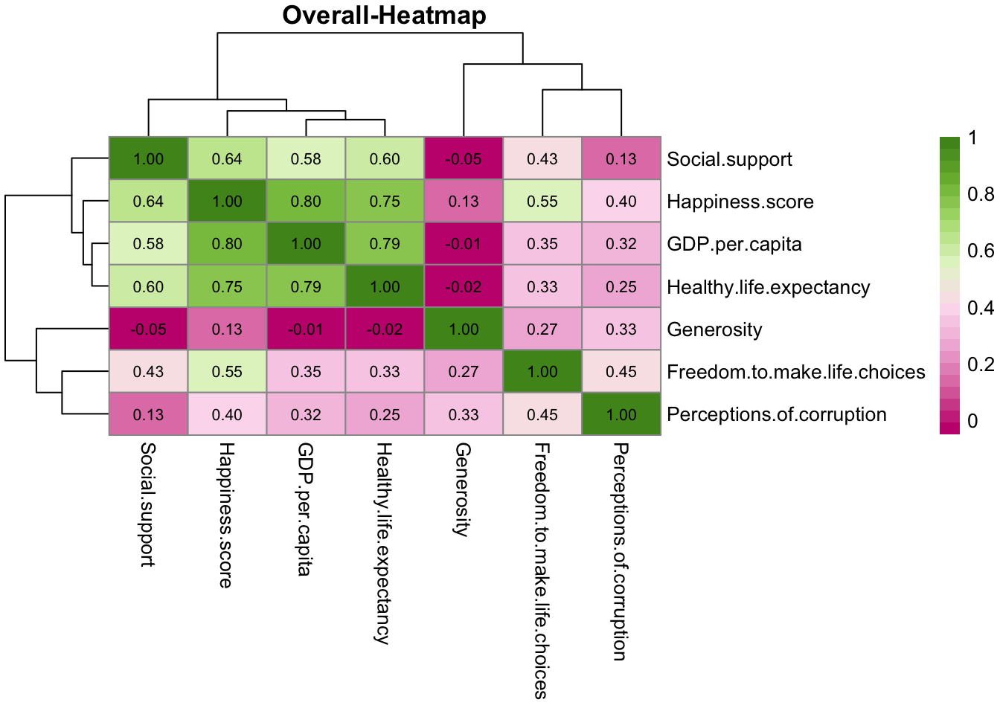
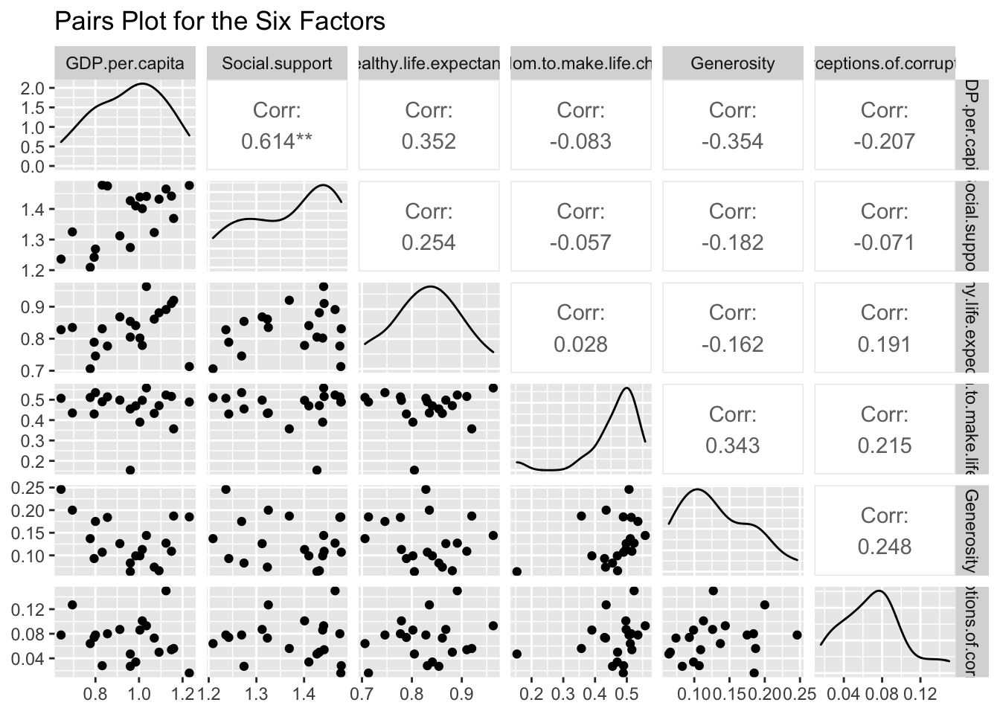

Chapter 5 Results
## 609 codes from your data successfully matched countries in the map
## 15 codes from your data failed to match with a country code in the map
## 84 codes from the map weren't represented in your data
5.1 Section 1: What is important variable for happiness score
Through the world map graphics, we found that the countries with higher rankings are generally in Europe and the United States. Especially in Europe, most countries are very high in the rankings. We want to analyze all the data to observe which factor is the most important for happiness score. By observing the data, we put forward a hypothesis. We ranked the importance of happiness scores based on factors. We believe that the first place should be GDP per capita, the second place is Health life expectancy, the third place is Social support, the fourth place is Freedom to make life choices, the fifth place is Generosity, and the last is Perceptions of corruption. 
By analyzing all countries’ data from 2019 to 2016, we can see that the most critical to happiness score is GDP per capita. The other factors in order are Health life expectancy, Social support, Freedom to make life choices, Perceptions of corruption, and Generosity. This result is consistent with our hypothesis. When people are wealthier, they will feel happier
5.1.1 For the top 10 countries, what factor is the most influencing happiness score
Depending on the Happiness Rank world map, we found that most countries in Europe have high happiness scores, and these countries occupy the top 10 from 2016-2019. Based on the above information, we have thoughts, What factors have caused these countries to have such high happiness scores. According to our guess, GDP per capita is the most critical factor for happiness score. We think that only in the case of high GDP per capita will get the same high Social support and Health life expectancy. When a country touch the high scores of these three factors, the people of this country will feel more happiness.
We use the data of 2019 as an example to make a heat map and Histogram. We found the correlation between Social support and happiness scores is high, and the correlation between Freedom to make life choices and happiness scores are high. What surprised us was that the correlation between GDP per capita was not as high as we expected. Base on this result and our background check on the top 10 countries, we have reached a new conclusion. Among the top 10 countries, these countries are all developed countries. Their GDP per capita is significantly higher than the average. For people in these countries, small fluctuations in GDP per capita will not affect their happiness. Because they generally think that they have enough money to make them feel happy. Money is no longer is the main factor that makes them feel happiness

Through the histogram, we can find that these top 10 countries’ happiness scores are primarily composed of Freedom to make life choices. We can see from the figure that 8% of the happiness score comes from Social Support. At the same time, we also found that the relatively high GDP per capita helped improve happiness scores. What surprised us is that Generosity is also an essential component of happiness score. but in the previous heat map, Generosity and Happiness are not highly correlated
5.1.2 Does the same factor have a high correlation with the happiness scores of the lower-ranked countries?
Bring doubts about the above questions. We will also create heat maps and bar charts for examples in 2019. This time we turn our attention to the lower-ranking countries. Through the data, we know that the low-ranking countries generally have low GDP per capita. So we got a guess that the happiness scores of these countries have a relatively low correlation with GDP per capita.

We can see that GDP per capita, Social support, and Healthy life expectancy are all highly correlated with happiness scores through the above graph. Especially the correlation between GDP per capita and happiness score far exceeds our expectations. Based on the high correlation between GDP and happiness scores, we speculate if these countries’ overall economy will increase significantly in the future. Then their happiness score will also increase significantly. Simultaneously, we also found that the lower-ranked countries are pretty different from the top-ranked countries. There are some differences in the correlation between specific individual factors and happiness scores. 
We found that the composition of happiness scores between these low-ranking countries and developed countries is still very different. Countries with the first and lower rankings have relatively diversified happiness scores. There are some differences in the composition of happiness scores for each country. However, these countries’ happiness scores are determining by Social support, Generosity, and Health life expectancy.
5.2 Section 2: What is the success of Latin America?
From the previous chapter, we have seen the happiness secret for the top happiest country. By comparing the happiness recipe between the top happiest country and the least happy country, we concluded that the two groups of the country are different in their level of importance in each factor. To be specific, the top happiest countries focus not only on GDP per capita but also on social support. However, for the least happy countries, GDP per capita is not as important as other factors such as healthy life expectancy and freedom. Besides, we observe that most countries in the list of top happiest countries are developed countries. All countries in the list of least happy countries are developing countries. However, it is wrong to say that all developing countries have a very low happiness rank. The fact is that some countries are high in happiness scores even they are not developed countries. Some of them even have higher scores than many developed countries. These observations lead us to our second question. What is their secret? Why do people think they are happy given the fact that they are low in GDP per capita?
5.2.1 Why we study Latin America

The bar chart above shows the ranking of the happiness score among most developing countries. I discarded countries in Europe and North America since most of them are developed countries. By comparison, we can see that countries in Latin America have higher average happiness scores. Thus, we brought our question to another scope.
We focus on our scope in Latin America. The reason we want to focus on this continent is not only because most of the countries in Latin America are developing countries but also they are all high in happiness scores compared with developing countries in Africa and Asia continent. Thus, instead of studying all developing countries that are high in happiness score. We are going to study the success of countries in Latin America.
5.2.2 Feature study for Latin America

This correlation pair graph depicts the correlation between different features for the countries in Latin America. Firstly, we can observe that GDP is not important to these countries anymore. Freedom or healthy life expectancy has a stronger positive correlation with the happiness core than GDP per capita. This observation provided more evidence to our belief on GDP per capita back in chapter one. In detail, we believed that GDP per capita doesn’t contribute much to the happiness score for most developing countries.
Moreover, we can also observe a negative correlation between Generosity and GDP per capita. This negative relation implies that in these countries high GDP per capita will lead to lower Generosity value. This finding is particularly interesting. The reason is that, intuitively, we would believe that GDP per capita is positively correlated with generosity because the richer people get, the more generous they will be. However, this negative relation gives us another idea. It shows that most people in Latin Countries show a relatively high generosity given their low income. This gives us another open question we continue in addition to our topics. What makes Latinos willing to donate even though they are not among the richest people in the world? This question remains open to the audience since we are limited by the format of this paper. By now, we can only say that generosity is one of their secrets to staying happy. However, the questions on how and why remain open and should be studied by social scientists.
5.2.3 Freedom of Healthy life expandency
From the above graph, we can see that freedom and healthy life expectancy are relatively high even compared with many developed countries. This fact shows why they have an overall high happiness score. From our introduction, we know that freedom depends on people’s choice on deciding what to do and life expectancy. However, data points from just one year will not be able to show enough evidence for us to conclude. To see if this phenomenon is a common trend, we have to look at the data from past years.
This boxplot shows the median and the variation for the distribution of both Healthy life expectancy and freedom for each Latino country. We can observe that the variation of the data is small. It implies that life expectancy and freedom remains at a high level in the past four years. It is not a unique phenomenon that happened just in 2019. Thus, we can conclude that high healthy life expectancy and freedom are also the secrets for Latino countries to stay at the top rank. However, our analysis is not enough, we need more evidence which will show in the next section.
5.3 Section 3: Time Series Analysis for some special countries
In the previous analysis, we have not involved the change of time, which makes our images look not three-dimensional enough. Therefore, in this part, we need to do a time series analysis. According to the previous analysis, most developing countries are in the ranks of a low happiness index, and there is enough room for improvement. Therefore, in this part, we must first observe the situation of the 10 countries with the fastest increase in the happiness index and analyze whether the relationship between the variables has changed greatly in different years. Finally, we consider finding representative countries to analyze the changes in variables.
This is the first plot for time series analysis. The main point is for the top 10 countries with highest change rate culmulatively. From this line plot, we can observe that all of them are not the developed countries, but mostly the developing countries,such as in Africa or Central America. In addition, there are some special countries, like Honduras and Bulgaria. Honduras keeps the stable obvious increasing rate of happiness score, surprisingly; on the contrary, Bulgaria only has a rapid increasing rate from 2018 to 2019. Of course, for Honduras, I have addtional analysis as follows.
This plot shows the correlation between all six prediction factors and happiness score for above 10 countries grouped by year. First of all, in these approximately poor countries, GDP_per_capital is still the crucial factor to affect happiness score obviously, which is the cause that developed countries have high happiness score as well. Furthermore, social support and healthy life expectancy are also highly correlated with happiness score for all 4 years. For six prediction factor internally, there are some special cases. For example, the correclation between freedom and social support in 2016 is 0, but 0.42 in 2019. However, this difference is not the point that we need to consider here.In general, between different years, the correlations each other do not have centralized differences. From this plot, we can also observe some other correlation information for any factor and year, these can even support some practical suggestions to offical government.

From the above summary for Honduras, we can observe that the GDP does not have much increase, but a little decrease from 2016 to 2019. This shows that GDP is not the reason to make Honduras’s happiness score rise rapidly. We can move to other 3 factors, those do have the obvious increase rate from 2016 to 2019. Therefore, we can conclude that for those developing countries, GDP is not the only one factor to be focused on,like mentioned in general overview, but some social problems are more significant sometimes, such as freedom and social support. Therefore, there is a suggestion to governments that does not focus on GDP only,but make social problem to be priority.